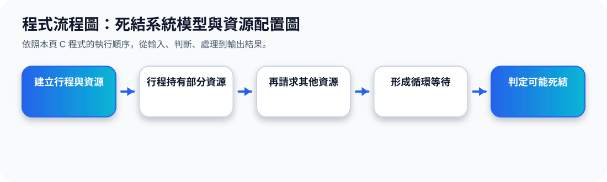

二、System Model：系統模型
核心觀念 系統由多種 resource types 組成，例如 CPU cycles、memory space、I/O devices。每一種 resource type 可能有多個 instances。
Request
Process 先要求資源。如果資源不能立刻取得，process 可能進入等待。
Use
Process 取得資源後開始使用，例如使用印表機、檔案或 I/O 裝置。
Release
Process 使用完後釋放資源，讓其他 process 可以取得。
三、Resource-Allocation Graph 的符號
Resource-Allocation Graph 可以把 deadlock 問題畫成圖。圖中的節點分成 process 與 resource type，箭頭分成 request edge 與 assignment edge。
Process
Pi
圓形代表 process，例如 P1、P2、P3。
Resource Type
Rj
方形代表 resource type，方形內的小點代表此資源類型有幾個 instance。
Request Edge
Pi→Rj
表示 process Pi 正在要求 Rj 的某個 instance。
Assignment Edge
Rj→Pi
表示 Rj 的某個 instance 已經分配給 process Pi。
符號動畫
四、Cycle 與 Deadlock 的判斷
Resource-Allocation Graph 最重要的判斷是看有沒有 cycle。
沒有 Cycle
如果圖中沒有 cycle，則沒有 deadlock。
有 Cycle
如果圖中有 cycle，可能發生 deadlock；若每種 resource type 只有一個 instance，則一定 deadlock。
Cycle 判斷動畫
五、投影片 71 的重點：有 Cycle 不一定都是 Deadlock
投影片 71 對比兩張資源配置圖：左邊有 cycle 且是 deadlock；右邊也有 cycle，但沒有 deadlock。原因是 resource type 可能有多個 instance，只要其中一個 process 可以先完成並釋放資源，其他 process 就可能繼續執行。
Deadlock
Cycle 中的每個 process 都等不到需要的資源，沒有 process 能先完成。
No Deadlock
雖然圖中有 cycle，但仍可能有某個 resource instance 釋放出來，讓等待鏈被打破。
六、連到下一主題：死結必要條件
本主題先用系統模型與資源配置圖理解 deadlock 的「形狀」。下一個主題會整理 deadlock 發生的四個必要條件：Mutual Exclusion、Hold and Wait、No Preemption、Circular Wait。
程式流程圖與流程講解
程式流程圖：死結系統模型與資源配置圖

流程講解
可編輯 C 程式範例與線上編輯器
可編輯 C 程式：死結系統模型與資源配置圖
這段程式依照上方流程圖設計，包含中文註解，適合貼到線上編輯器直接執行與修改。
程式題目完整教學內容
程式題目完整教學：死結系統模型與資源配置圖
一、程式題目講解
用條件判斷模擬 P1、P2 互相持有與等待資源時形成 circular wait。
重點是 circular wait：P1 持有 R1 等 R2，P2 持有 R2 等 R1，就可能造成 deadlock。
二、完整程式碼
以下程式碼可直接複製到 C 語言線上編譯器執行。程式中已加入中文註解，說明主要變數、判斷流程與輸出目的。
#include <stdio.h>
/*
主題 18：死結系統模型與資源配置圖
功能：用簡單條件判斷是否形成 circular wait。
*/
int main(void) {
int p1_hold_r1 = 1;
int p2_hold_r2 = 1;
int p1_request_r2 = 1;
int p2_request_r1 = 1;
if (p1_hold_r1 && p2_hold_r2 && p1_request_r2 && p2_request_r1) {
printf("P1 持有 R1 並等待 R2。\n");
printf("P2 持有 R2 並等待 R1。\n");
printf("形成 circular wait，可能發生 deadlock。\n");
} else {
printf("未形成循環等待。\n");
}
return 0;
}三、程式執行結果
P1 持有 R1 並等待 R2。
P2 持有 R2 並等待 R1。
形成 circular wait，可能發生 deadlock。結果說明：重點是 circular wait：P1 持有 R1 等 R2，P2 持有 R2 等 R1，就可能造成 deadlock。 程式依照設定的資料與控制流程逐步輸出，因此可以從結果看到每個步驟的執行順序與狀態變化。
四、程式流程圖與流程圖說明
本頁上方已提供對應的程式流程圖，圖中以「開始、資料設定、條件判斷、重複處理、輸出結果、結束」呈現程式執行順序。
程式設定四個條件皆為真，再用 if 判斷是否形成循環等待；成立就輸出死結風險。
五、重要函數與語法說明
多個 int 變數代表資源持有與請求狀態；&& 連接所有必要條件；if/else 輸出判斷結果。
六、整體說明
本題的學習重點是把作業系統概念轉成可觀察的 C 程式流程。學生應先理解題目概念，再對照程式碼、流程圖與執行結果，掌握變數設定、條件判斷、迴圈處理與輸出結果之間的關係。